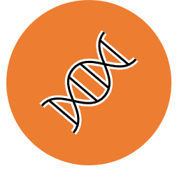

Omics
GM2 - Omics techniques and their application to genomic medicine

This module explores the state of the art genomics techniques used for DNA sequencing (targeted approaches, whole exome and whole genome sequencing) and RNA sequencing, using highly parallel techniques, together with current technologies routinely used to investigate genomic variation in the clinical setting. This module will introduce the bioinformatics approaches required for the analysis of genomic data, which together with data governance covered in GM1 will provide a solid foundation for the Bioinformatics and Statistics modules. The module will also cover the use of array based methodologies and RNA sequencing in estimating levels of protein expression, micro RNAs and long non–coding RNAs. A comprehensive introduction to metabolomics and proteomics, which are important for the functional interpretation of genomic data and discovery of disease biomarkers will also be included. Students will also learn about the strategies employed to evaluate pathogenicity of variants for clinical reporting.
What will I study in this module?
In GM2 you will learn about:
Basis of genotyping and detection of genetic variation
Whole exome and whole genome sequencing, including library preparation methods, sequencing chemistries and platforms
Hands-on practical experience of an ‘omics’ workflow from sample to analysed data (virtual for ACY 2020-21)
Brief overview of methodologies for detecting base substitutions (SNV), small insertions and deletions (indels), copy number variants (CNV) or rearrangements, to include Sanger sequencing, pyrosequencing, ARMS, MLPA, qFPCR, microarray
Genomic testing strategies as: gene focused, multiple genes, or whole genome or exome, and for detection of sequence, copy number or rearrangements
RNA expression profiling (expression array) and RNA sequencing
Metabolomics and proteomics techniques
Overview of bioinformatics approaches to the analysis of genomic data using Galaxy
What will I be able to achieve at the end?
By the end of this module students will be able to:
Describe and critically evaluate a range of up-to-date genomic technologies and platforms used to sequence targeted parts of the genome or whole genomes
Discuss the application of other techniques (for example array comparative genome hybridisation, qPCR) commonly used to interrogate genomic variation in the clinical setting using examples in cancer and rare inherited diseases and infectious diseases
Acquire the knowledge of selecting appropriate technology platforms for applications in medical genomics either for research or medical diagnostic purposes
Critique how these techniques and their applications in RNA expression can be applied to metabolomics and proteomic analysis
Discuss and critically appraise approaches to the bioinformatics analysis and interpretation of ‘omics’ data
Critically evaluate the different ‘omics’ technologies and platforms and their application to genomic medicine and the impact of personalised medicine
Preserved from https://www.genomics.cam/modules/omics on 10 September 2026. Linked external services may require internet access. The original source snapshot is included with the migration files.